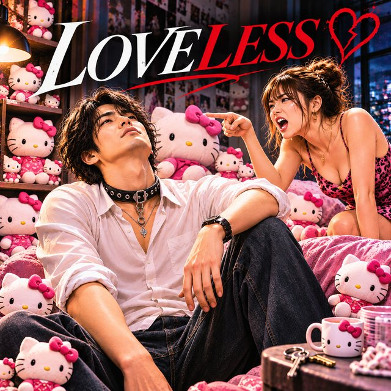

OFFICIAL MUSIC SITE
PIPPOPPER
選んだ一曲を、いまの音で。歌詞と物語ごと、届ける。
Latest Release最新楽曲
Close My Heart
PIP POPPER
AIの感想過去の恋で傷ついた経験から、新しい恋に踏み出せずにいる女性の揺れる心を描いたラブソング。「長い髪が好き」という昔の言葉を今も意識してしまう描写に、忘れきれない思いがにじむ。信じたいのに信じられない葛藤の先で、「私の不安を掻き消して」と願う言葉がまっすぐに響く。ユーモアを封じた、静かで切実な一曲。
作品ページへWorks楽曲一覧
10 曲を掲載中
-
Close My Heart
 Close
CloseMy Heart -
3月30日
 3月30日
メールで知り合った顔も知らない相手と初めて会う一夜を、男性のラップと女性の歌の両方の視点から描いた楽曲。携帯電話とメールが恋の入り口だった時代の空気が、待ち合わせのバーや夜の海岸線のドライブとともに描かれる。軽い遊びのつもりの男と、一夜限りで終わらせたくない女のすれ違いが、生々しさと切なさの入り混じった余韻を残す。
3月30日
メールで知り合った顔も知らない相手と初めて会う一夜を、男性のラップと女性の歌の両方の視点から描いた楽曲。携帯電話とメールが恋の入り口だった時代の空気が、待ち合わせのバーや夜の海岸線のドライブとともに描かれる。軽い遊びのつもりの男と、一夜限りで終わらせたくない女のすれ違いが、生々しさと切なさの入り混じった余韻を残す。
-
TRADER-損切戦士-
TRADER-
損切戦士- 損切りができずに含み損を抱え続ける個人投資家の悲哀を、自嘲たっぷりに描いた投資ソング。ナンピン、追証、掲示板の煽り、デイトレーダーの成功本など、株式投資の「あるある」が次々と登場する。欲と忍耐のあいだで揺れる姿を笑い飛ばしながら、いつの間にか「金の奴隷」になってしまう怖さも浮かび上がらせている。 -
LOVELESS

LOVELESS 束縛の強い恋人との関係に息苦しさを感じながら、別れを切り出せずにいる男の本音をまくしたてる一曲。首輪とリード、部屋を埋め尽くすキャラクターグッズといった具体的なモチーフで、不自由な日々がコミカルに描かれる。「明日こそ別れる」と言いながら結局流されてしまう情けなさまで隠さず描き、英語交じりのサビがその叫びを際立たせている。 -
MY WAY
 MY
MYWAY -
MENKUI
 MENKUI
合コンで「顔で選ぶ」女性たちにまったく相手にされない男の奮闘を、冷たく突き放すサビと、食い下がるラップの掛け合いで描いた一曲。空回りする幹事の気遣い、イケメンへの露骨な態度の差、負け惜しみ混じりの反撃が次々と飛び出す。見た目で人を選ぶ側と選ばれない側、どちらの身勝手さも笑いに変えてしまう風刺の効いたコミカルソング。
MENKUI
合コンで「顔で選ぶ」女性たちにまったく相手にされない男の奮闘を、冷たく突き放すサビと、食い下がるラップの掛け合いで描いた一曲。空回りする幹事の気遣い、イケメンへの露骨な態度の差、負け惜しみ混じりの反撃が次々と飛び出す。見た目で人を選ぶ側と選ばれない側、どちらの身勝手さも笑いに変えてしまう風刺の効いたコミカルソング。
- Manner Manner 公衆トイレやプールでのマナー違反に対する怒りを、容赦のない言葉と畳みかけるラップで爆発させた一曲。下品な題材を真正面から扱いながら、韻を踏み、言葉遊びを重ね、最後まで妙な勢いで突っ走る。ふざけているようで、訴えていることは至って真面目。「自分の後始末くらい自分でしろ」という、実に正論なマナー啓発ソング。
-
Anniversary
 Anniversary
仲間の結婚を祝うために、二人のメンバーが交互に言葉をつないで贈った一曲。昔からの悪友だからこそ言える遠慮のない冗談と、面と向かっては伝えにくい本気の祝福が入り交じる。ふざけた言葉の奥にある友情が、まっすぐなサビで顔を出す。PIP POPPERらしい、少し照れくさくて温かいウェディングソング。
Anniversary
仲間の結婚を祝うために、二人のメンバーが交互に言葉をつないで贈った一曲。昔からの悪友だからこそ言える遠慮のない冗談と、面と向かっては伝えにくい本気の祝福が入り交じる。ふざけた言葉の奥にある友情が、まっすぐなサビで顔を出す。PIP POPPERらしい、少し照れくさくて温かいウェディングソング。
-
ブスの瞳に恋してる。。。
 ブスの
ブスの瞳に 外見やお金をめぐる打算的な恋愛が、いつしか本気の愛情へと変わっていく。人間の身勝手さと恋愛の不思議さを、ユーモラスに描いた楽曲。恋してる。。。 -
就職活動
 就職活動
就職活動や労働社会を、皮肉と風刺を交えて描いた楽曲。
就職活動
就職活動や労働社会を、皮肉と風刺を交えて描いた楽曲。